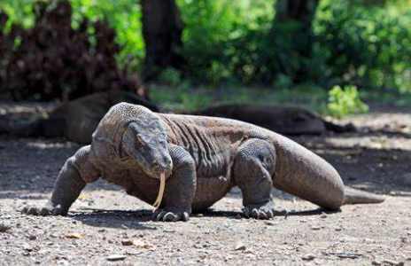
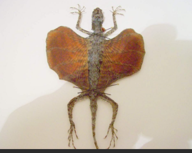
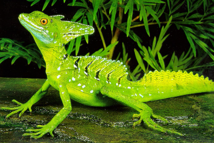

Le plus gros mesure environ 3m de long: c'est le dragon de komodo. Le plus petit, de la famille des geckos, pas de 2cm sans la queue
Ce dragon vit surl'ile de komodo, en Indonésie. Il n'a pas changé de forme depuis 140 millions d'années. Il peut peser 130kg et plus.
 Ce lézard à gauche, appelé dragon volant va en vol plané d'un perchoir à l'autre. ET le basilic à droite, si vite à la surface de l'eau qu'il ne s'enfonce pas.